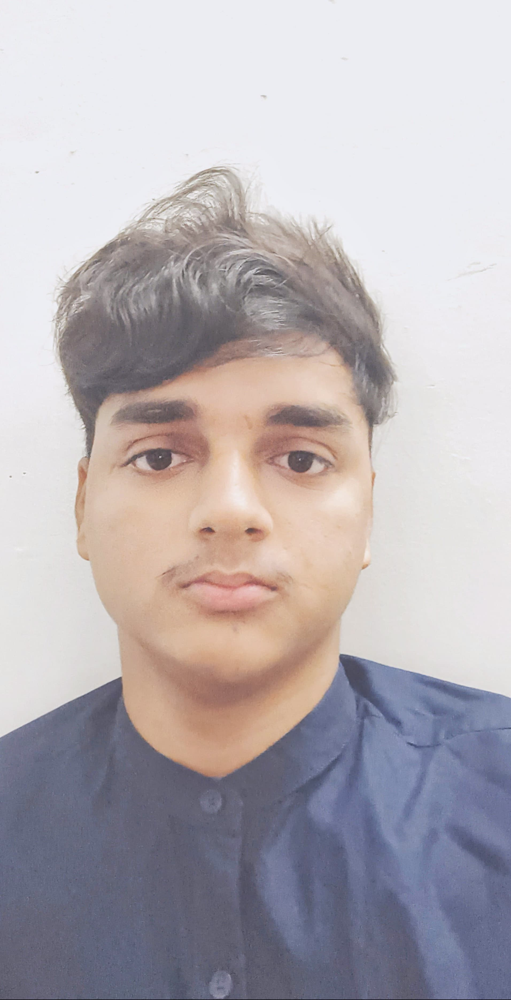

Aditya Kumar Seth

SUMMARY
A third-year Computer Science student at IIIT Kurnool experience in programming, particularly in C++ and Python ,
have a keen intrest in AI ML, also have some knowledge in Web Development and have good understandings of computer science(OS,COA,Networks,etc.). Actively working on academic and personal projects, demonstrating strong problem-solving skills and enthusiasm for learning and applying new technologies.
EDUCATION
Indian Institute of Information Technology (IIIT) Kurnool
Degree: Bachelor of Technology (B.Tech & M.tech) in Computer Science and Engineering(completion in 2027-2028)
PROJECTS
- Currently working with my friends to build an online shopping application and will integrate it with ML models to improve its recommendations.
-
Built some prediction applications on regression models using some data sets present online, like FWI prediction and sales predictions
SKILLS
Technical Skills
- AI ML
- Programming Languages: C, C++, Python
- Website Development: HTML, CSS, BootStrap, JavaScript
- System Architecture: Familiar with RISC V and low level programming
- Problem Solving, Data Structures and Algorithms (DSA), OOPs
Soft Skills
- Politeful Communication and good Behaviour with my seniors
- Fast Learner and always seek for learning new things
CONTACT
Email: adityaseth7788@gmail.com
Ph: +91 8603778361 ,9950175080
linkedin
github